📊 Central Limit Theorem — Simulation & Visualization in Python
🎯 Objective
Demonstrate the Central Limit Theorem (CLT) through simulations on different population distributions.
📖 What is the Central Limit Theorem?
The Central Limit Theorem states:
Given a population with any distribution, the sampling distribution of the sample mean approaches a normal distribution as the sample size increases.
Key points:
- Works even when the population distribution is non-normal.
- The larger the sample size, the better the approximation.
- Standard deviation of sample means:
[\sigma_{\bar{x}} = \frac{\sigma}{\sqrt{n}}]
🧪 Step 1: Create and Summarize Populations
We will generate populations from three different distributions:
- Uniform Distribution: Continuous, flat.
- Exponential Distribution: Right-skewed.
- Binomial Distribution: Discrete, symmetric.
# Set random seed for reproducibility
np.random.seed(42)
# Population size
N = 100_000
# Create populations
uniform_pop = np.random.uniform(0, 1, N)
exponential_pop = np.random.exponential(scale=1.0, size=N)
binomial_pop = np.random.binomial(n=10, p=0.5, size=N)
# Print summary statistics
print("\U0001F4CA Population Summary:")
print("\n\u27A1️ Uniform Distribution:")
print(f" Mean : {np.mean(uniform_pop):.3f}")
print(f" Variance : {np.var(uniform_pop):.3f}")
print("\n\u27A1️ Exponential Distribution:")
print(f" Mean : {np.mean(exponential_pop):.3f}")
print(f" Variance : {np.var(exponential_pop):.3f}")
print("\n\u27A1️ Binomial Distribution:")
print(f" Mean : {np.mean(binomial_pop):.3f}")
print(f" Variance : {np.var(binomial_pop):.3f}")
# Plot histograms for visual verification
plt.figure(figsize=(15, 4))
plt.subplot(1, 3, 1)
plt.hist(uniform_pop, bins=50, color='skyblue')
plt.title("Uniform")
plt.subplot(1, 3, 2)
plt.hist(exponential_pop, bins=50, color='lightgreen')
plt.title("Exponential")
plt.subplot(1, 3, 3)
plt.hist(binomial_pop, bins=50, color='salmon')
plt.title("Binomial")
plt.tight_layout()
plt.show()
📊 Population Summary:
➡️ Uniform Distribution: Mean : 0.499 Variance : 0.083
➡️ Exponential Distribution: Mean : 1.005 Variance : 1.008
➡️ Binomial Distribution: Mean : 5.004 Variance : 2.504
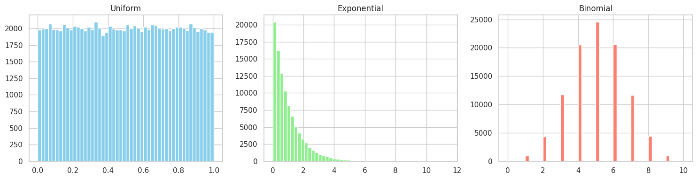
📈 Step 2: Sampling and Distribution of Sample Means
We define a function to: - Take multiple samples from a population, - Compute the sample means, - Plot the distribution of sample means for various sample sizes.
def plot_sampling_distribution(population, dist_name):
sample_sizes = [5, 10, 30, 50]
num_samples = 1000
for n in sample_sizes:
sample_means = [
np.mean(np.random.choice(population, size=n, replace=False))
for _ in range(num_samples)
]
plt.figure(figsize=(8, 4))
sns.histplot(sample_means, kde=True, bins=30, color="cornflowerblue")
plt.title(f"{dist_name} — Sample Size {n}", fontsize=14)
plt.xlabel("Sample Mean")
plt.ylabel("Frequency")
plt.tight_layout()
plt.show()
🔬 Step 3: Run Simulations for Each Population
plot_sampling_distribution(uniform_pop, "Uniform Distribution")
plot_sampling_distribution(exponential_pop, "Exponential Distribution")
plot_sampling_distribution(binomial_pop, "Binomial Distribution")
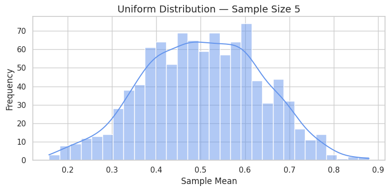
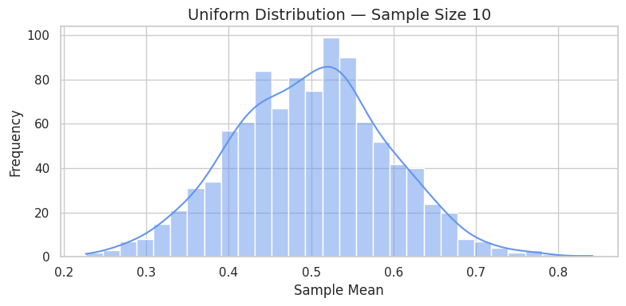
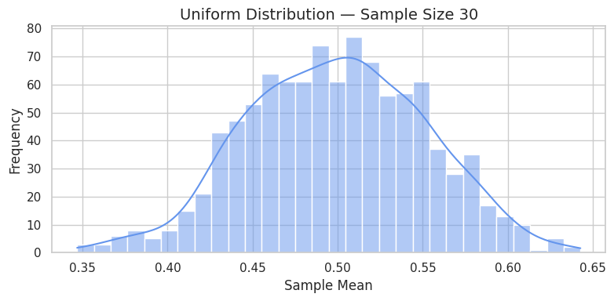
 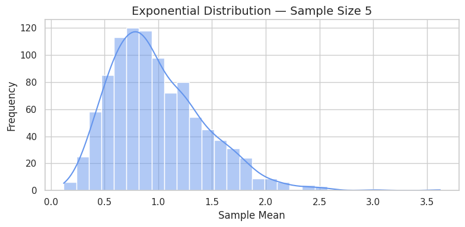
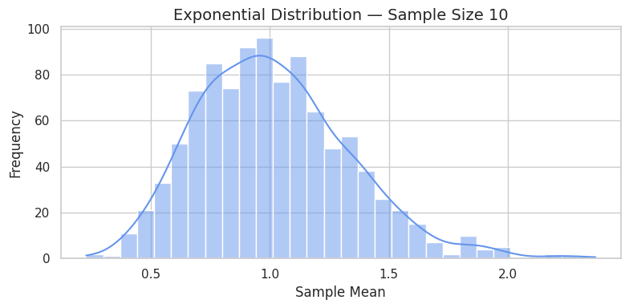
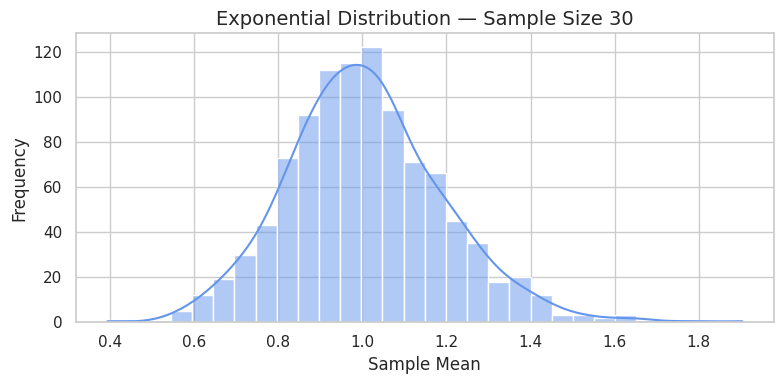
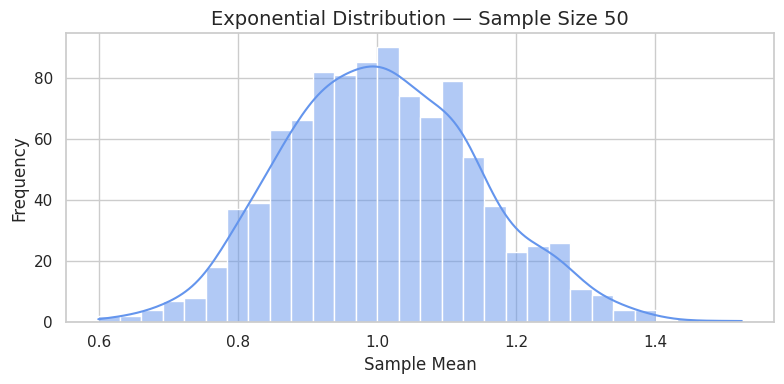
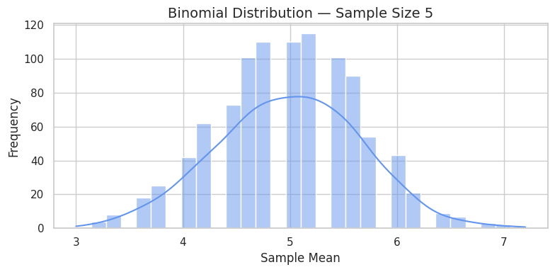
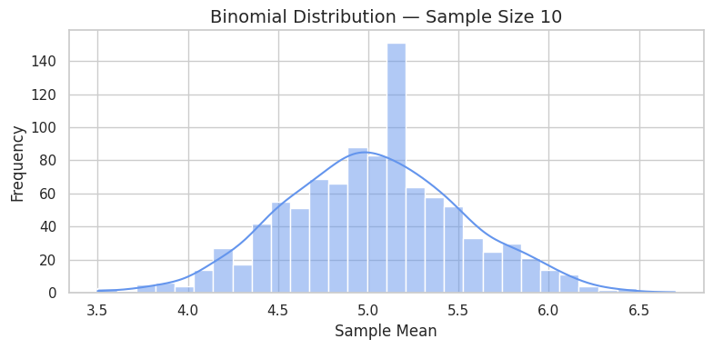
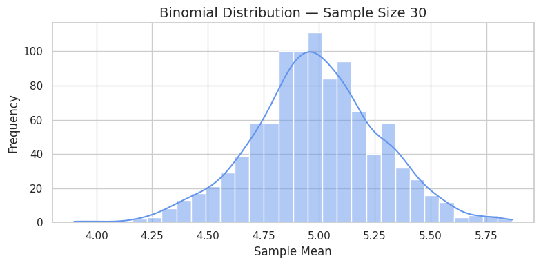
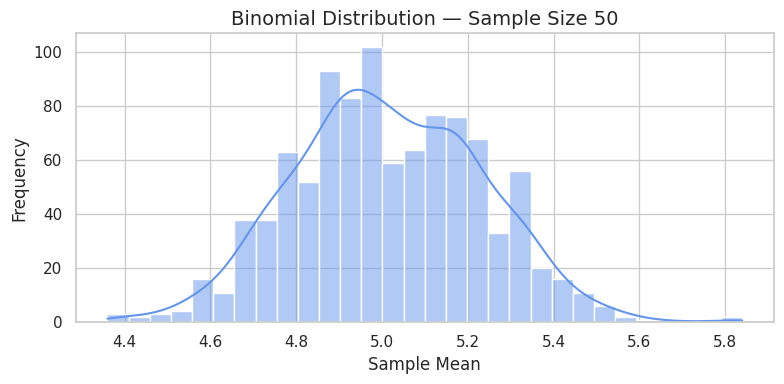
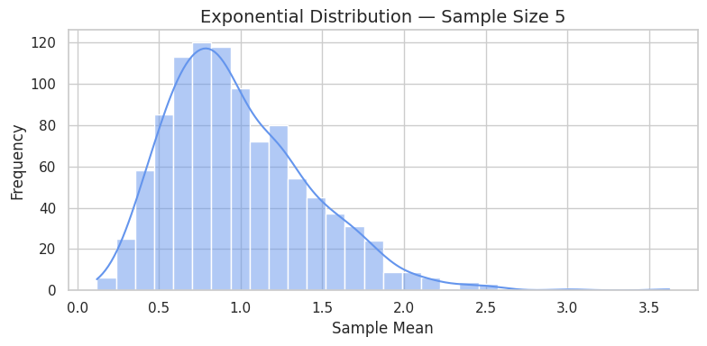
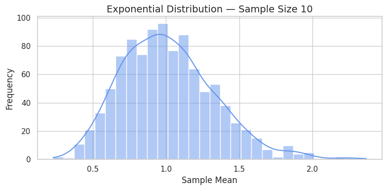
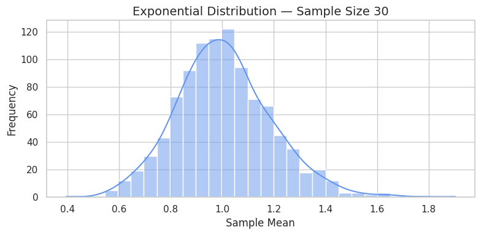
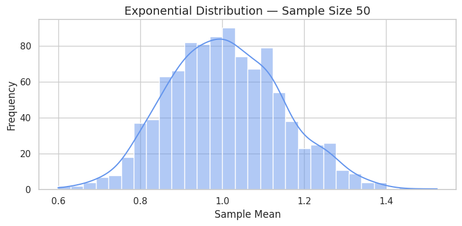
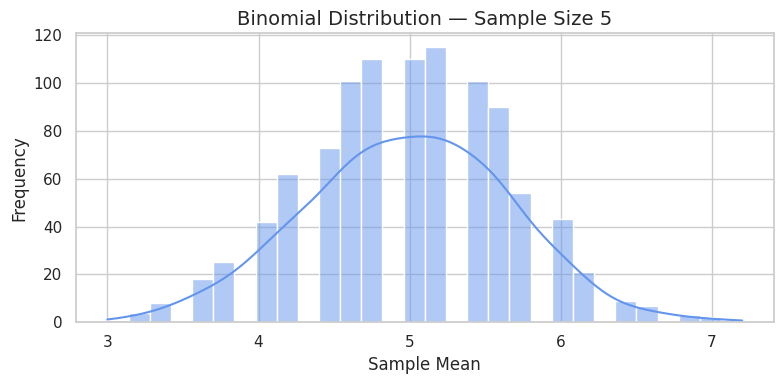
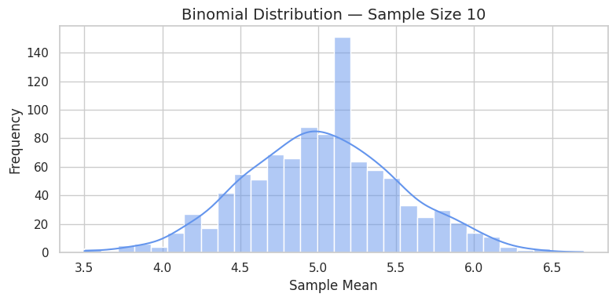
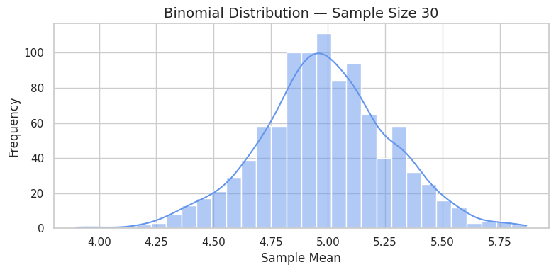
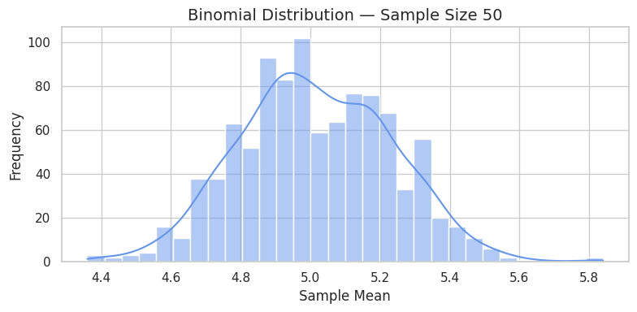
💼 Real-World Applications of CLT
| Application | Description |
|---|---|
| Polling | Estimate election results from survey samples. |
| Quality Control | Monitor average product dimensions in factories. |
| Finance | Forecast average returns of portfolios. |
| Medicine | Compare treatment effectiveness via patient samples. |
✅ Conclusion
- The CLT applies across various population shapes: continuous, discrete, skewed.
- The distribution of the sample mean becomes normal as sample size increases.
- This foundational principle allows us to use normal-based inference in most fields.
🧠 Key Takeaways
- The Central Limit Theorem enables reliable inference from samples.
- With larger samples, the sampling distribution becomes tighter and more normal.
- This is why the normal distribution is central in statistical methods.